Los peces del río son una parte fundamental de los ecosistemas acuáticos y su diversidad es realmente facinante, es el hogar de miles de especies de peces, algunos de los cuales son admirados por su belleza y valor gastronómico. Los peces de rio son peces de agua dulce y por consiguiente suelen habitar en ríos, lagos arroyos o laguna. Lo anterior mencionado hace exactamente que los peces de río cuenten con características únicas tales como: Su independencia a beber agua, ya que esta la absorbe por medio de su piel.
 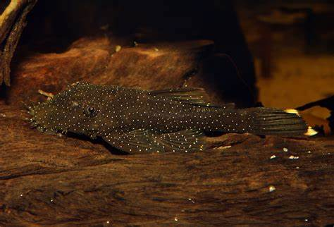
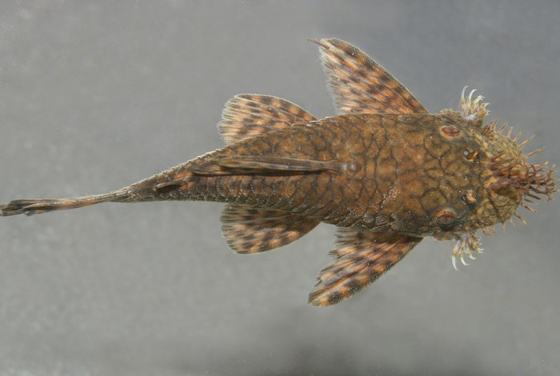
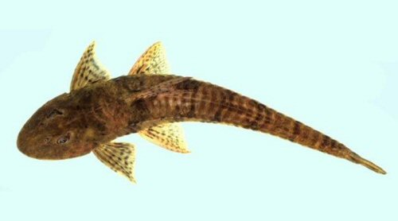
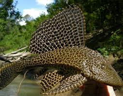
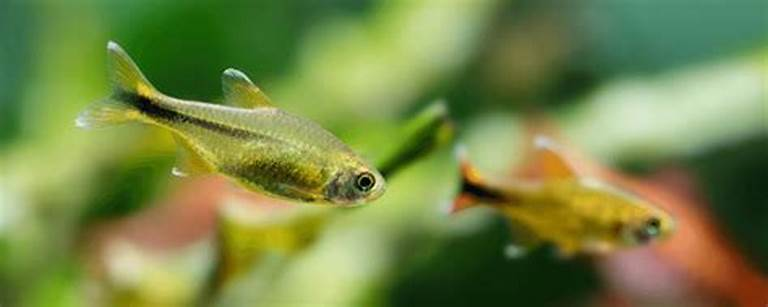
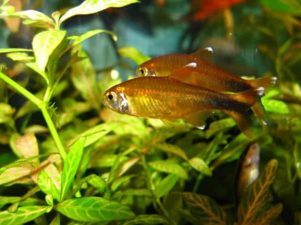
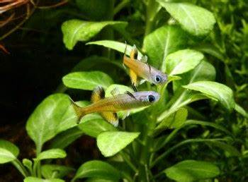
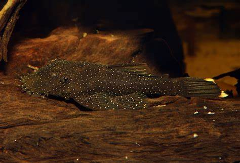
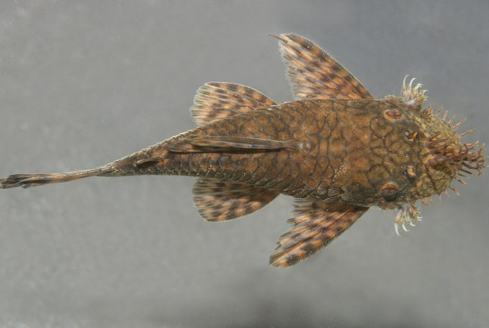
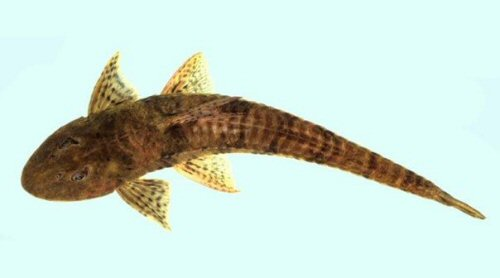
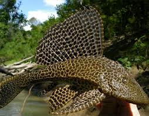
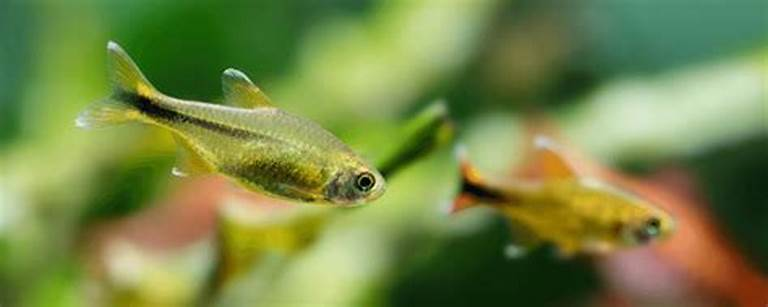
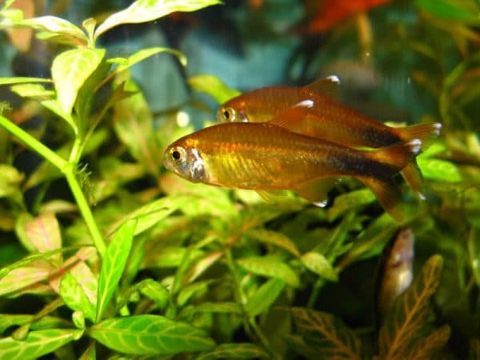
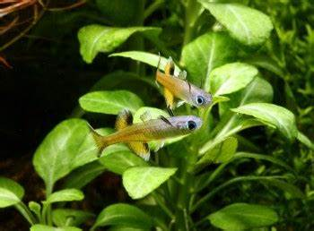
Las lagunas son ecosistemas acuáticos de agua dulce que tiene una gran diversidad biológica y una variedad de peces. Estos peces desarrollan habilidades especiales para sobrevivir en estas lagunas y se adaptan a los cambios físico-químicos que ocurren en su entorno.
Los peces de colores vibrantes y con variedad de patrones son una de las características más sobresalientes del ecosistema de los arrecifes. Está demostrado que estos animales están dotados de una visión bien desarrollada y una capacidad para distinguir colores y patrones de color.